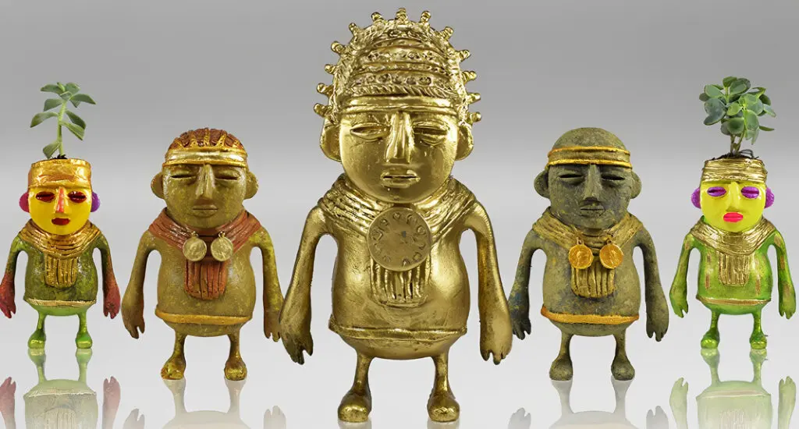
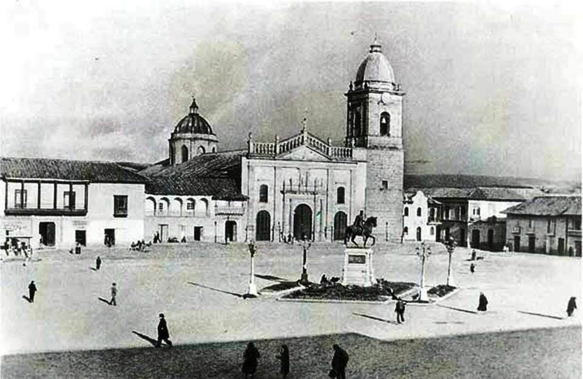
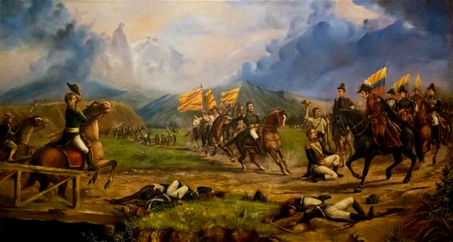
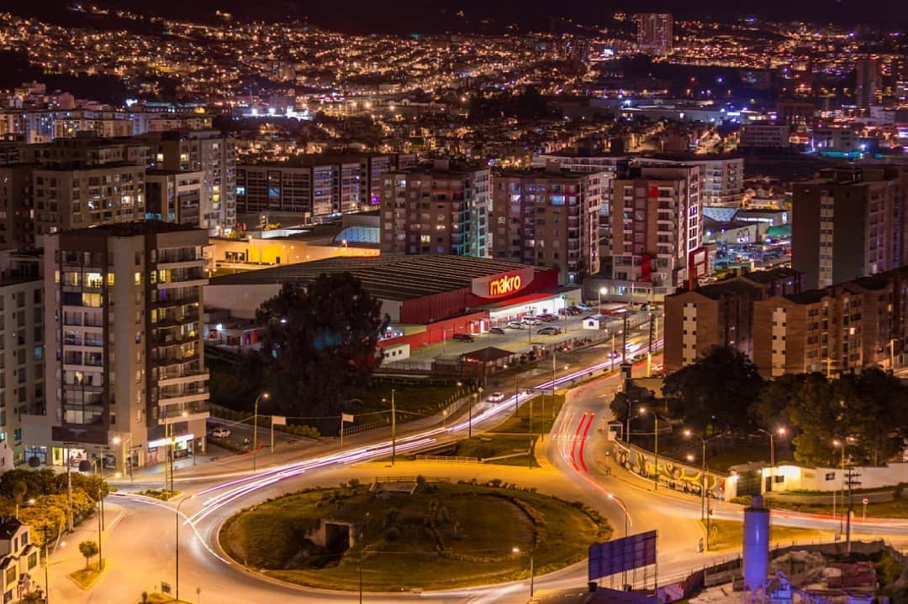

Orígenes y época prehispánica
El territorio de Tunja estuvo habitado por los muiscas, uno de los pueblos indígenas más avanzados del altiplano cundiboyacense. Su capital se llamaba Hunza, sede del zaque, autoridad máxima de la confederación muisca en esta región.
Periodo colonial
Tras la llegada de los españoles en 1537, Gonzalo Suárez Rendón fundó la ciudad de Tunja el 6 de agosto de 1539. Desde entonces, se convirtió en un importante centro político, religioso y cultural del Virreinato de la Nueva Granada. Se destacó por sus templos, conventos y arquitectura colonial, gran parte de la cual aún se conserva en su centro histórico.
Siglo XIX e Independencia
Tunja jugó un papel fundamental en la independencia de Colombia. Fue sede del Congreso de 1811, donde se declaró la primera Constitución de la Provincia de Tunja. Además, la ciudad y sus alrededores fueron escenarios clave en la Campaña Libertadora de 1819, como la Batalla del Pantano de Vargas, que aseguró la victoria patriota.
Transformaciones modernas
Durante los siglos XX y XXI, Tunja ha crecido como capital de Boyacá, destacándose por su desarrollo en educación gracias a sus universidades. La ciudad mantiene una activa vida cultural con eventos como el Festival Internacional de la Cultura y el tradicional Aguinaldo Boyacense. Hoy combina su tradición histórica con los avances modernos en infraestructura y sociedad.